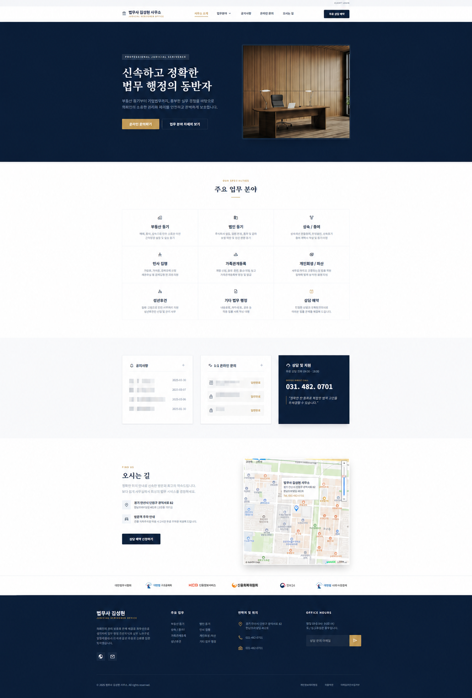
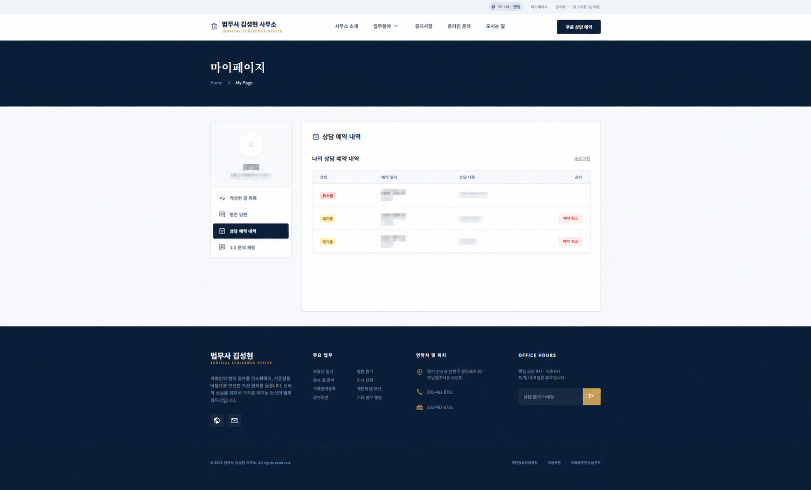

법률사무소 통합 웹 및 관리자 시스템
"온라인 상담예약, Q&A 비밀글, 실시간 STOMP 채팅, Gateway Rate Limiting, Redis 캐싱 및 DB 읽기 분리를 적용한 풀스택 웹 플랫폼"
Result Screens
zoom_in 이미지를 클릭하면 원본 크기로 크게 볼 수 있습니다.

메인 및 서비스 소개 화면
공지사항 및 실시간 Q&A, 예약 신청 접근을 조화롭게 배치한 메인 대시보드 (클릭 시 원본 크기 보기)

상담 예약 신청 및 다차원 검증 뷰
선택 일자의 휴일, 중복 여부 및 당일 시간 제한을 비동기로 정합성 검증하는 폼 (클릭 시 원본 크기 보기)

관리자 전용 대시보드 & 1:1 STOMP 채팅 모니터링
미확인 상담 건수 알림 및 개별 고객 실시간 STOMP 채팅방 대응 관리자 전경 (클릭 시 원본 크기 보기)
프로젝트 개요
본 프로젝트는 법률사무소를 이용하는 일반 사용자의 온라인 진입 장벽을 낮추고, 사무소 관리자의 반복적인 수동 업무를 줄이기 위해 구축된 통합 웹 시스템입니다. 네이버 로그인을 통한 간편 인증, 중복 차단 상담 예약, 실시간 1:1 STOMP 채팅 등 주요 업무 흐름을 단일 플랫폼으로 정리했습니다.
백엔드는 모듈 분리와 확장 가능성을 고려해 API 라우팅 게이트웨이(`gateway`), 핵심 비즈니스 로직 API(`apiserver`), 비동기 푸시 처리를 위한 이벤트 워커(`notification-service`)로 구성된 Spring Boot 멀티 모듈 아키텍처를 채택했습니다. 프론트엔드는 React 19와 TypeScript로 개발했으며 Redis 캐싱 및 MariaDB Primary/Replica 읽기·쓰기 분리를 적용해 조회 성능과 운영 안정성을 개선했습니다.
Development Background
lightbulb 배경
법률 상담 특성상 신규 문의 대응 속도와 개인 상담 정보 보호가 신뢰성에 중요한 영향을 줍니다. 따라서 단순 소개에 그치는 웹사이트 대신, 예약 현황을 검증하고 즉각 대화할 수 있는 업무 포털 시스템의 구축이 주요 요건이었습니다.
report_problem 기존의 한계점 & 해결 방식
- 별도 회원가입의 피로감 ➔ 네이버 OAuth2 간편 가입 및 JWT 자동 발급으로 허들 감소.
- 예약 중복 및 휴무일 예약 오작동 ➔ 서버 단 6단계 다중 시간 검증 엔진 적용.
- 상담문의 즉각 처리 지연 ➔ Kafka 비동기 이벤트 발행 ➔ FCM 앱 즉시 푸시 파이프라인 개설.
- 비밀글 및 업로드 보안 취약성 ➔ BCrypt 기반 Q&A 비밀번호 해시 처리 및 Apache Tika 실시간 MIME 탐지 적용.
Key Features
네이버 OAuth2 + JWT
세션 만료 5분 전 자동 연장 알림 모달 제공 및 Zustand 기반 토큰 로컬 지속화.
지능형 예약 검증
휴무일 체크, 지난 시간 배제, 동일 시간 중복 불가, 하루 1회 신청 검증 엔진 탑재.
STOMP 1:1 채팅
WebSocket 헤더 JWT 검증 및 Redis 기반 1초/1분 메시지 Rate Limit이 연동된 대화방.
DB 이중화 및 캐싱
MariaDB Primary/Replica 읽기·쓰기 분리 및 자주 조회되는 게시글 Redis 캐싱.
Gateway API 라우터
Spring Cloud Gateway를 통한 라우팅 단일화 및 과도한 요청 완화용 Redis Rate Limit.
첨부파일 검증
경로 조작 공격 차단, Apache Tika를 활용한 이진 파일 타입 감지 및 이미지 썸네일 자동화.
Tech Stack
System Architecture
비즈니스 코어 트랜잭션 수행, Redis 캐싱 제어, WebSocket STOMP 세션 관리, Kafka 이벤트 발행
Kafka 토픽(notification.events) 비동기 소비 ➔ Firebase FCM 연동 ➔ 관리자 모바일 앱 푸시 발송
JWT Refresh, 1:1 메시지 한도 limit, 게시글 조회 캐시
상담 예약 생성, Q&A 및 회원 정보 원본 기록
실시간 동기화 복제를 통한 읽기 전용 쿼리 부하 분산
Implementation Details
1) JWT Refresh Token의 Redis 상태 관리 설계
무상태성(Stateless)을 갖는 JWT의 보안 한계(도난 시 통제 불가)를 절충하기 위해, 발급 만료가 긴 Refresh Token은 Redis 캐시 상태소(TTL 7일)에 보관하는 설계를 택했습니다. Access Token은 1시간의 짧은 생명주기를 부여하고, 만료 임박 시 서버가 Redis의 세션 존재 여부를 검증하고 연장 발급함으로써 관리자 단의 강제 로그아웃 통제력을 확보했습니다.
2) STOMP WebSocket 연결 시 CONNECT 프레임 JWT 검증
WebSocket 연결 시 Spring Security 필터가 아닌 STOMP 프레임의 헤더에서 JWT를 추출해 비동기 인증을 수행해야 했습니다. 아래와 같이 ChannelInterceptor를 직접 커스터마이징하여 연결 성립 직전 토큰 신뢰성을 검증하도록 구현했습니다.
@Override
public Message<?> preSend(Message<?> message, MessageChannel channel) {
StompHeaderAccessor accessor = MessageHeaderAccessor.getAccessor(message, StompHeaderAccessor.class);
if (StompCommand.CONNECT.equals(accessor.getCommand())) {
String authHeader = accessor.getFirstNativeHeader("Authorization");
if (authHeader == null || !authHeader.startsWith("Bearer ")) {
throw new IllegalArgumentException("Missing or invalid token.");
}
String token = authHeader.substring(7);
try {
Authentication userAuth = jwtTokenProvider.getAuthentication(token);
accessor.setUser(userAuth); // WebSocket 세션 내 주체 설정
} catch (JwtException e) {
throw new IllegalArgumentException("Expired or malformed signature.");
}
}
return message;
}Troubleshooting
Redis 도입 전 게시판 조회 병목 임계 돌파
Q&A 및 공지사항 상세조회가 반복 호출되면서 MariaDB CPU 점유율이 90%를 초과하였고, 60 VUs 부하 테스트 단계부터 p95 응답 속도가 1,155ms 이상으로 상승하여 타임아웃 오류 발생.
Spring Cache 표준 하에 상세조회 API 단에 Redis 캐시(TTL 2분)를 탑재. 새로운 문의글 생성/수정/삭제 트랜잭션 성공 시 @CacheEvict를 통해 캐시 무효화(Invalidation)를 수행해 정합성과 응답 속도를 함께 개선.
알림 전송 장애로 인한 코어 트랜잭션 롤백 방지
상담 예약을 신청할 때 FCM 알림 서버에 순차적으로 접근하다가 타임아웃이나 FCM 에러 발생 시, 비즈니스 예약 로직까지 전부 롤백되어 사용자가 예약을 다시 작성해야 하는 비효율 발생.
@TransactionalEventListener(phase = TransactionPhase.AFTER_COMMIT)를 적용하여 DB 커밋 이후 알림 이벤트를 비동기로 처리. 알림 전송 실패가 예약 트랜잭션에 영향을 주지 않도록 Kafka 기반으로 분리.
Performance & Security
browse-only 60 VUs 기준, Redis 캐시 미적용 상태(1,155ms) 대비 48ms 수준으로 감소.
browse-only 부하 테스트 기준 PASS 구간이 50 VUs에서 260 VUs로 확대.
Apache Tika를 연동하여 파일 MIME 검증과 경로 조작 문자 차단 로직을 보강.
Links
Retrospective
본 프로젝트는 사전 설계 문서와 구현 규칙을 Markdown으로 정의한 뒤, AI 페어 프로그래밍(Vibe Coding)을 활용해 구현 효율을 높인 사례입니다. 반복적인 보일러플레이트 작성은 Codex와 빠르게 처리하고, 핵심 설계와 검증 기준은 직접 정의하며 개발 리소스를 아꼈습니다.
그 결과, 확보한 시간을 전체 시스템 구성요소(React, Gateway, API Server, Notification Service) 간의 통신 흐름, MariaDB Primary/Replica 읽기·쓰기 분리 DB 구성 설계, 그리고 캐시 무효화 및 트랜잭션 수명주기 설계와 같은 아키텍처 및 데이터 흐름을 학습하고 검증하는 데 집중할 수 있었습니다. 이를 통해 전체 데이터 인프라의 흐름을 더 넓은 관점에서 이해하는 경험을 얻었습니다.